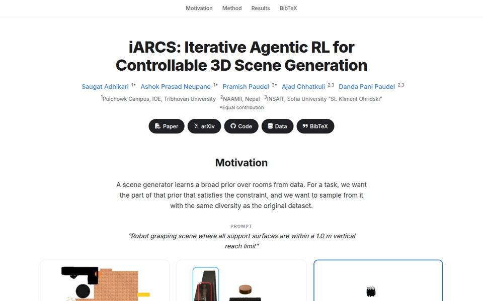

iARCS: Iterative Agentic RL for Controllable 3D Scene Generation
CVPR 2026 Workshop · extended version under review at WACV
Agentic RL that adapts a pretrained 3D scene diffusion model to natural-language constraints using LLM-written reward programs refined in a reflection loop. Task success 4.5% → 73.8% (robot reachability) over MiDiffusion; 12K generated scenes released.